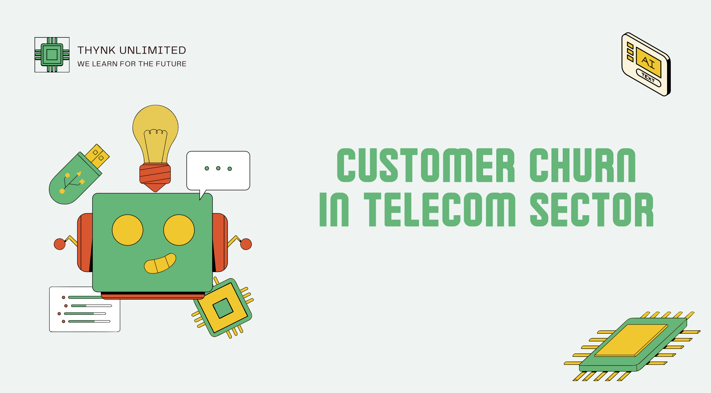
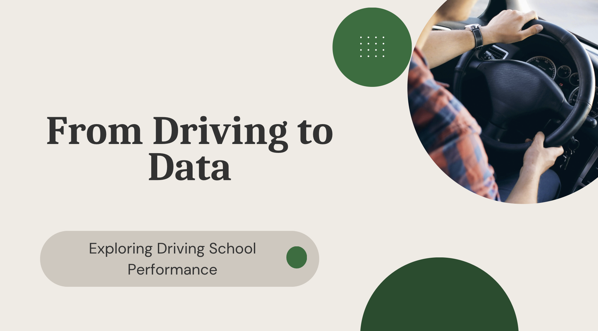

Projects

Machine Learning
Churn prediction
Anticipating customer cancellations with Python.

Data Analysis
From Driving to Data
Analyzing 11,000+ French driving schools to identify top performers.

Statistiques
Viralité TikTok
Déterminants de la viralité réelle.